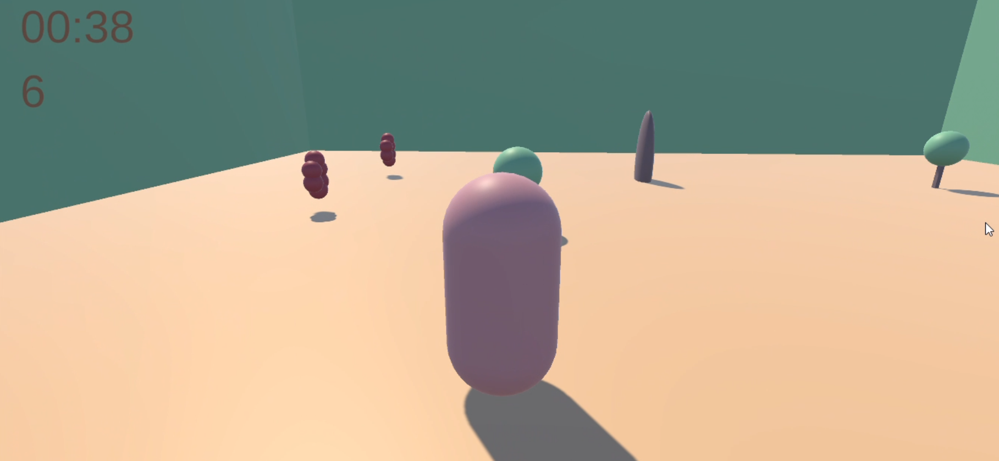
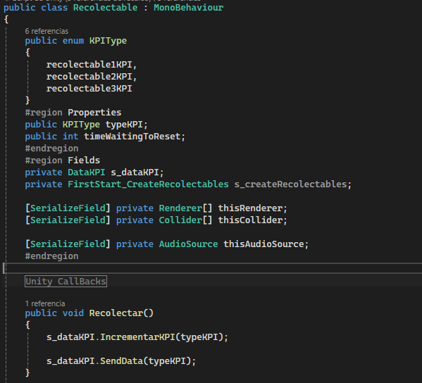
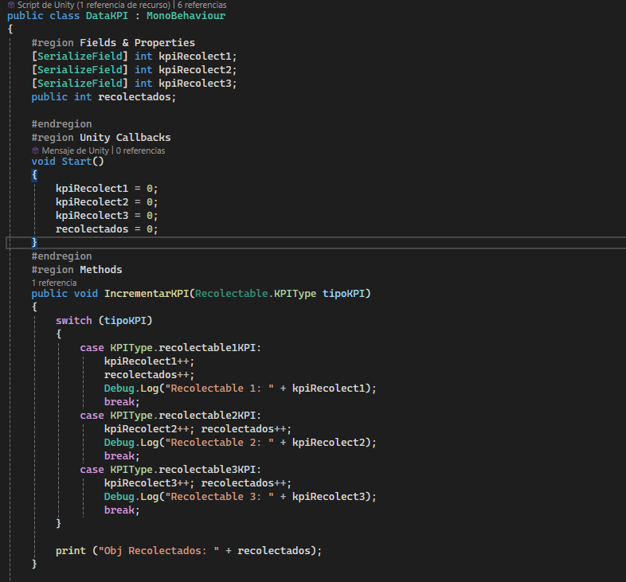
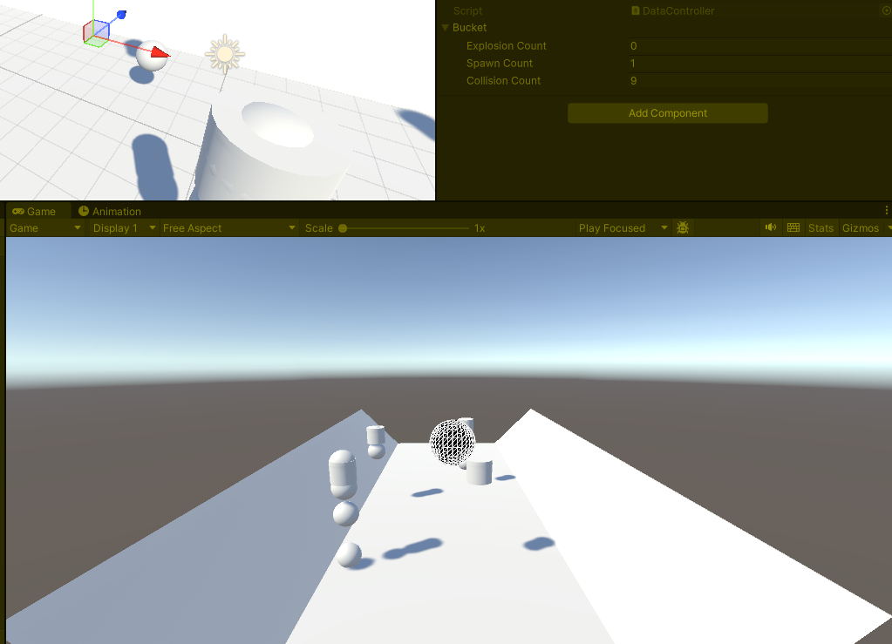

How to Measure, Analyze, and Improve Your Game with Key Indicators
Data KPIs (Key Performance Indicators) in Unity are used to collect and analyze data within a game, allowing developers to better understand how players interact with it and to make informed design or business decisions.
In a small game where players collect objects within a time limit, I use a Data KPI system to decide which ending to show based on the number of collectibles gathered.
Each collectible has a script with an Enum KPIType and a Collect() method. When collected, this method communicates with the Data KPI Manager (centralized in the GameController) to increase the corresponding counter.
Finally, the GameController evaluates the results and activates one ending or another.
Repository Data KPI & Save System   In another project with cannons shooting bullets and generating explosions, I measured through KPIs how many instances were being created on screen. This helped me not only optimize performance but also understand how chaotic the gameplay became at different difficulty levels.
